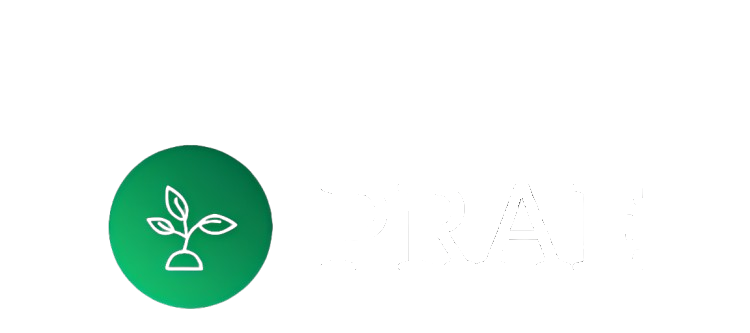
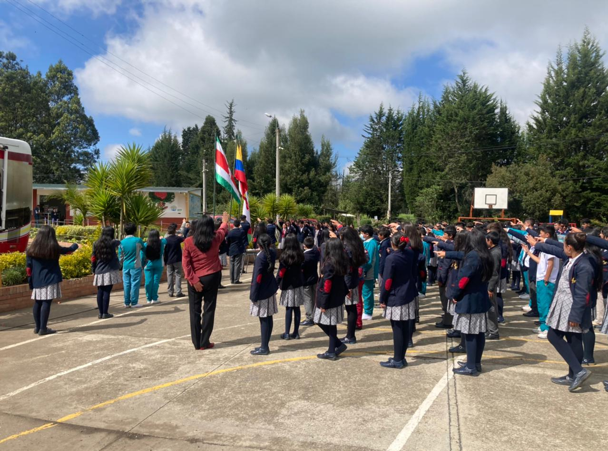

Sostenibilidad Ambiental
PRAE

Página PRAE
Crear una plataforma educativa y de sensibilización ambiental
Representantes
Los representantes del PRAE en un colegio incluyen:
Horizonte PRAE
Es una iniciativa educativa que promueve la sensibilización y acción frente a problemas ambientales